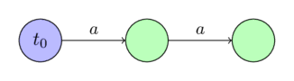
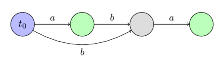
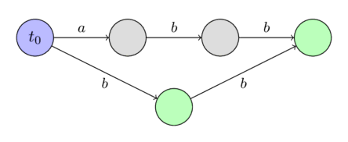
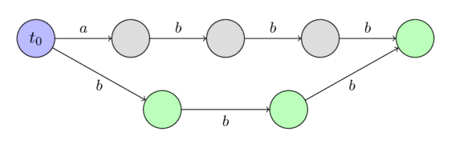
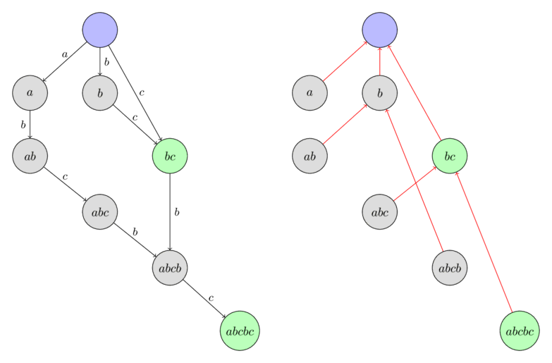

آتاماتای پسوندی (Suffix Automaton)¶
آتاماتای پسوندی یک ساختمان داده قدرتمند است که امکان حل بسیاری از مسائل مرتبط با رشتهها را فراهم میکند.
بهعنوان مثال، با استفاده از آن میتوانید تمام رخدادهای یک رشته را در رشتهای دیگر پیدا کنید، یا تعداد زیررشتههای متمایز یک رشتهی معین را بشمارید. هر دو این وظایف را میتوان با کمک آتاماتای پسوندی در زمان خطی حل کرد.
بهطور شهودی، آتاماتای پسوندی را میتوان بهعنوان شکلی فشرده از تمام زیررشتههای یک رشتهی معین درک کرد. یک واقعیت چشمگیر این است که آتاماتای پسوندی تمام این اطلاعات را در قالبی بسیار فشرده نگهداری میکند. برای یک رشته به طول $n$، این ساختار تنها به حافظهای از مرتبه $O(n)$ نیاز دارد. علاوه بر این، ساخت آن نیز در زمان $O(n)$ امکانپذیر است (اگر اندازه الفبا، $k$، را ثابت در نظر بگیریم)، در غیر این صورت، هم حافظه و هم پیچیدگی زمانی $O(n \log k)$ خواهد بود.
خطی بودن اندازه آتاماتای پسوندی اولین بار در سال ۱۹۸۳ توسط Blumer و همکارانش کشف شد و در سال ۱۹۸۵ اولین الگوریتمهای خطی برای ساخت آن توسط Crochemore و Blumer ارائه گردید.
تعریف آتاماتای پسوندی¶
آتاماتای پسوندی برای یک رشتهی داده شده $s$، یک DFA (آتاماتای متناهی قطعی / ماشین حالت متناهی قطعی) کمینه است که تمام پسوندهای رشته $s$ را میپذیرد.
بهعبارت دیگر:
- آتاماتای پسوندی یک گراف جهتدار غیرمدور است. رئوس آن حالت (states) و یالها گذار (transitions) بین حالتها نامیده میشوند.
- یکی از حالتها، $t_0$، حالت اولیه است و باید منبع گراف باشد (یعنی تمام حالتهای دیگر از $t_0$ قابل دسترسی هستند).
- هر گذار با یک کاراکتر برچسبگذاری شده است. تمام گذارهای خارجشونده از یک حالت باید برچسبهای متفاوتی داشته باشند.
- یک یا چند حالت بهعنوان حالتهای پایانی علامتگذاری شدهاند. اگر از حالت اولیه $t_0$ شروع کرده و در طول گذارها به یک حالت پایانی برسیم، برچسبهای گذارهای طیشده باید یکی از پسوندهای رشته $s$ را بسازند. هر یک از پسوندهای $s$ باید با استفاده از یک مسیر از $t_0$ به یک حالت پایانی قابل ساختن باشد.
- آتاماتای پسوندی شامل کمترین تعداد رأس در میان تمام آتاماتاهایی است که شرایط توصیفشده در بالا را برآورده میکنند.
خاصیت زیررشته¶
سادهترین و مهمترین خاصیت آتاماتای پسوندی این است که اطلاعات مربوط به تمام زیررشتههای رشته $s$ را در خود دارد. هر مسیری که از حالت اولیه $t_0$ شروع شود، اگر برچسبهای گذارهای آن را یادداشت کنیم، یک زیررشته از $s$ را تشکیل میدهد. و برعکس، هر زیررشته از $s$ با یک مسیر مشخص که از $t_0$ شروع میشود، متناظر است.
برای سادهسازی توضیحات، خواهیم گفت که زیررشته با آن مسیر متناظر است (مسیری که از $t_0$ شروع شده و برچسبهایش آن زیررشته را میسازند). و برعکس، میگوییم هر مسیر با رشتهای که از برچسبهایش ساخته میشود، متناظر است.
یک یا چند مسیر میتوانند به یک حالت منتهی شوند. بنابراین، خواهیم گفت که یک حالت با مجموعهای از رشتهها متناظر است که این رشتهها با آن مسیرها متناظر هستند.
نمونههایی از آتاماتاهای پسوندی ساختهشده¶
در اینجا چند نمونه از آتاماتاهای پسوندی برای چند رشته ساده را نشان میدهیم.
حالت اولیه را با رنگ آبی و حالتهای پایانی را با رنگ سبز مشخص میکنیم.
برای رشتهی $s =~ \text{""}$:

برای رشتهی $s =~ \text{"a"}$:

برای رشتهی $s =~ \text{"aa"}$:

برای رشتهی $s =~ \text{"ab"}$:

برای رشتهی $s =~ \text{"aba"}$:

برای رشتهی $s =~ \text{"abb"}$:

برای رشتهی $s =~ \text{"abbb"}$:

ساخت در زمان خطی¶
قبل از اینکه الگوریتم ساخت آتاماتای پسوندی در زمان خطی را توصیف کنیم، باید چند مفهوم جدید و اثبات ساده را معرفی کنیم که در درک فرآیند ساخت بسیار مهم خواهند بود.
مواضع پایانی $endpos$¶
هر زیررشته غیرتهی $t$ از رشته $s$ را در نظر بگیرید. مجموعهی تمام مواضعی در رشته $s$ که رخدادهای $t$ در آنجا به پایان میرسند را با $endpos(t)$ نمایش میدهیم. برای مثال، برای رشته $\text{"abcbc"}$ داریم $endpos(\text{"bc"}) = \{2, 4\}$.
دو زیررشته $t_1$ و $t_2$ را $endpos$-همارز مینامیم اگر مجموعههای پایانی آنها یکسان باشند: $endpos(t_1) = endpos(t_2)$. بنابراین تمام زیررشتههای غیرتهی رشته $s$ را میتوان بر اساس مجموعههای $endpos$ آنها به چندین کلاس همارزی تقسیم کرد.
مشخص میشود که در یک ماشین پسوندی، زیررشتههای $endpos$-همارز با یک حالت یکسان متناظر هستند. بهعبارت دیگر، تعداد حالتها در یک آتاماتای پسوندی برابر است با تعداد کلاسهای همارزی در میان تمام زیررشتهها، به علاوه حالت اولیه. هر حالت از آتاماتای پسوندی با یک یا چند زیررشته که دارای مقدار $endpos$ یکسانی هستند، متناظر است.
ما بعداً الگوریتم ساخت را با استفاده از این فرض توصیف خواهیم کرد. سپس خواهیم دید که تمام ویژگیهای مورد نیاز یک آتاماتای پسوندی، به جز کمینه بودن، برآورده میشوند. و کمینه بودن از قضیه Nerode نتیجه میشود (که در این مقاله اثبات نخواهد شد).
میتوانیم چند مشاهده مهم در مورد مقادیر $endpos$ داشته باشیم:
لم ۱: دو زیررشته غیرتهی $u$ و $w$ (با $length(u) \le length(w)$) $endpos$-همارز هستند، اگر و تنها اگر رشته $u$ در $s$ فقط به شکل یک پسوند از $w$ ظاهر شود.
اثبات واضح است. اگر $u$ و $w$ مقادیر $endpos$ یکسانی داشته باشند، آنگاه $u$ پسوندی از $w$ است و فقط به شکل پسوندی از $w$ در $s$ ظاهر میشود. و اگر $u$ پسوندی از $w$ باشد و فقط به شکل پسوند در $s$ ظاهر شود، آنگاه مقادیر $endpos$ طبق تعریف برابر هستند.
لم ۲: دو زیررشته غیرتهی $u$ و $w$ را در نظر بگیرید (با $length(u) \le length(w)$). آنگاه مجموعههای $endpos$ آنها یا اصلاً اشتراکی ندارند، یا $endpos(w)$ زیرمجموعهای از $endpos(u)$ است. و این بستگی به این دارد که آیا $u$ پسوندی از $w$ است یا خیر.
اثبات: اگر مجموعههای $endpos(u)$ و $endpos(w)$ حداقل یک عنصر مشترک داشته باشند، آنگاه رشتههای $u$ و $w$ هر دو در آن موضع به پایان میرسند، یعنی $u$ پسوندی از $w$ است. اما در این صورت، در هر رخداد $w$، زیررشته $u$ نیز ظاهر میشود، که به این معنی است که $endpos(w)$ زیرمجموعهای از $endpos(u)$ است.
لم ۳: یک کلاس همارزی $endpos$ را در نظر بگیرید. تمام زیررشتههای این کلاس را بر اساس طول نزولی مرتب کنید. آنگاه در دنباله حاصل، هر زیررشته یک کاراکتر کوتاهتر از قبلی خواهد بود و در عین حال پسوندی از قبلی خواهد بود. بهعبارت دیگر، در یک کلاس همارزی یکسان، زیررشتههای کوتاهتر در واقع پسوندهای زیررشتههای بلندتر هستند و تمام طولهای ممکن را در یک بازه مشخص $[x; y]$ به خود اختصاص میدهند.
اثبات: یک کلاس همارزی $endpos$ را ثابت در نظر بگیرید. اگر فقط شامل یک رشته باشد، لم بدیهی است. حال فرض کنید تعداد رشتهها در کلاس بیشتر از یک باشد.
طبق لم ۱، دو رشته متفاوت $endpos$-همارز همیشه به گونهای هستند که رشته کوتاهتر، یک پسوند سره از رشته بلندتر است. در نتیجه، نمیتوان دو رشته با طول یکسان در یک کلاس همارزی داشت.
$w$ را بلندترین و $u$ را کوتاهترین رشته در کلاس همارزی در نظر بگیرید. طبق لم ۱، رشته $u$ یک پسوند سره از رشته $w$ است. حال هر پسوندی از $w$ با طولی در بازه $[length(u); length(w)]$ را در نظر بگیرید. بهراحتی میتوان دید که این پسوند نیز در همان کلاس همارزی قرار دارد. زیرا این پسوند تنها میتواند به شکل پسوندی از $w$ در رشته $s$ ظاهر شود (چون پسوند کوتاهتر $u$ نیز در $s$ فقط به شکل پسوندی از $w$ ظاهر میشود). در نتیجه، طبق لم ۱، این پسوند با رشته $w$ $endpos$-همارز است.
لینکهای پسوندی $link$¶
یک حالت $v \ne t_0$ در آتاماتا را در نظر بگیرید. همانطور که میدانیم، حالت $v$ با کلاسی از رشتهها با مقادیر $endpos$ یکسان متناظر است. و اگر $w$ را بلندترینِ این رشتهها بنامیم، آنگاه تمام رشتههای دیگر پسوندهای $w$ هستند.
همچنین میدانیم که چند پسوند اول یک رشته $w$ (اگر پسوندها را به ترتیب نزولی طولشان در نظر بگیریم) همگی در این کلاس همارزی قرار دارند و سایر پسوندها (حداقل یک پسوند دیگر - پسوند تهی) در کلاسهای دیگری قرار دارند. بزرگترین پسوندی که در کلاس دیگری قرار دارد را $t$ مینامیم و یک لینک پسوندی به آن ایجاد میکنیم.
بهعبارت دیگر، یک لینک پسوندی $link(v)$ به حالتی میرود که متناظر با بلندترین پسوند $w$ است که در یک کلاس همارزی $endpos$ دیگر قرار دارد.
در اینجا فرض میکنیم که حالت اولیه $t_0$ با کلاس همارزی خودش متناظر است (که فقط شامل رشته تهی است) و برای راحتی کار، $endpos(t_0) = \{-1, 0, \dots, length(s)-1\}$ را تعریف میکنیم.
لم ۴: لینکهای پسوندی یک درخت با ریشه $t_0$ تشکیل میدهند.
اثبات: یک حالت دلخواه $v \ne t_0$ را در نظر بگیرید. یک لینک پسوندی $link(v)$ به حالتی میرود که متناظر با رشتههایی با طول اکیداً کمتر است (این از تعریف لینکهای پسوندی و لم ۳ نتیجه میشود). بنابراین، با حرکت در طول لینکهای پسوندی، دیر یا زود به حالت اولیه $t_0$ خواهیم رسید که با رشته تهی متناظر است.
لم ۵: اگر با استفاده از مجموعههای $endpos$ درختی بسازیم (با این قانون که مجموعه گره والد شامل مجموعههای تمام فرزندانش به عنوان زیرمجموعه است)، آنگاه ساختار با درخت لینکهای پسوندی منطبق خواهد بود.
اثبات: این واقعیت که میتوانیم با استفاده از مجموعههای $endpos$ یک درخت بسازیم، مستقیماً از لم ۲ نتیجه میشود (اینکه هر دو مجموعه یا اشتراکی ندارند یا یکی در دیگری محاط است).
حال یک حالت دلخواه $v \ne t_0$ و لینک پسوندی آن $link(v)$ را در نظر بگیرید. از تعریف لینک پسوندی و از لم ۲ نتیجه میشود که:
که این رابطه همراه با لم قبلی، ادعا را اثبات میکند: درخت لینکهای پسوندی در اصل یک درخت از مجموعههای $endpos$ است.
در اینجا یک نمونه از درخت لینکهای پسوندی در آتاماتای پسوندی ساختهشده برای رشته $\text{"abcbc"}$ را میبینید. گرهها با بلندترین زیررشته از کلاس همارزی مربوطه برچسبگذاری شدهاند.

جمعبندی¶
قبل از پرداختن به خود الگوریتم، دانش انباشتهشده را مرور میکنیم و چند نماد کمکی معرفی میکنیم.
- زیررشتههای رشته $s$ را میتوان بر اساس مواضع پایانیشان ($endpos$) به کلاسهای همارزی تقسیم کرد.
- آتاماتای پسوندی از حالت اولیه $t_0$ و همچنین یک حالت برای هر کلاس همارزی $endpos$ تشکیل شده است.
- برای هر حالت $v$ یک یا چند زیررشته منطبق است. ما بلندترینِ این رشتهها را با $longest(v)$ و طول آن را با $len(v)$ نشان میدهیم. کوتاهترینِ این زیررشتهها را با $shortest(v)$ و طول آن را با $minlen(v)$ نشان میدهیم. آنگاه تمام رشتههای متناظر با این حالت، پسوندهای متفاوتی از رشته $longest(v)$ هستند و تمام طولهای ممکن در بازه $[minlen(v); len(v)]$ را دارند.
- برای هر حالت $v \ne t_0$ یک لینک پسوندی تعریف میشود که به حالتی میرود که متناظر با پسوندی از رشته $longest(v)$ با طول $minlen(v) - 1$ است. لینکهای پسوندی درختی با ریشه $t_0$ تشکیل میدهند و در عین حال این درخت رابطه شمول بین مجموعههای $endpos$ را نشان میدهد.
- میتوانیم $minlen(v)$ را برای $v \ne t_0$ با استفاده از لینک پسوندی $link(v)$ به این صورت بیان کنیم:
- اگر از یک حالت دلخواه $v_0$ شروع کرده و لینکهای پسوندی را دنبال کنیم، دیر یا زود به حالت اولیه $t_0$ خواهیم رسید. در این حالت، دنبالهای از بازههای گسسته $[minlen(v_i); len(v_i)]$ به دست میآوریم که اجتماع آنها بازه پیوسته $[0; len(v_0)]$ را تشکیل میدهد.
الگوریتم¶
اکنون میتوانیم به خود الگوریتم بپردازیم. الگوریتم برخط (آنلاین) خواهد بود، یعنی کاراکترهای رشته را یک به یک اضافه کرده و در هر مرحله آتاماتا را بر اساس آن اصلاح میکنیم.
برای دستیابی به مصرف حافظه خطی، فقط مقادیر $len$، $link$ و لیستی از گذارها را در هر حالت ذخیره میکنیم. حالتهای پایانی را برچسبگذاری نمیکنیم (اما بعداً نشان خواهیم داد که چگونه پس از ساخت آتاماتای پسوندی این برچسبها را تنظیم کنیم).
در ابتدا آتاماتا از یک حالت واحد $t_0$ تشکیل شده است که اندیس $0$ را خواهد داشت (حالتهای باقیمانده اندیسهای $1, 2, \dots$ را دریافت میکنند). برای راحتی، به آن $len = 0$ و $link = -1$ اختصاص میدهیم ($-1$ یک حالت فرضی و ناموجود خواهد بود).
اکنون تمام کار به پیادهسازی فرآیند افزودن یک کاراکتر $c$ به انتهای رشته فعلی خلاصه میشود. بیایید این فرآیند را توصیف کنیم:
- فرض کنید $last$ حالتی است که با کل رشته قبل از افزودن کاراکتر $c$ متناظر است. (در ابتدا $last = 0$ را تنظیم میکنیم و در آخرین مرحله الگوریتم، $last$ را بر اساس آن تغییر خواهیم داد.)
- یک حالت جدید $cur$ ایجاد کنید و به آن $len(cur) = len(last) + 1$ را اختصاص دهید. مقدار $link(cur)$ در این لحظه مشخص نیست.
- اکنون رویه زیر را انجام میدهیم: از حالت $last$ شروع میکنیم. تا زمانی که گذاری با حرف $c$ وجود نداشته باشد، یک گذار به حالت $cur$ اضافه میکنیم و لینک پسوندی را دنبال میکنیم. اگر در نقطهای گذاری با حرف $c$ از قبل وجود داشته باشد، متوقف شده و این حالت را $p$ مینامیم.
- اگر چنین حالتی $p$ پیدا نکردیم، یعنی به حالت فرضی $-1$ رسیدیم، آنگاه میتوانیم $link(cur) = 0$ را اختصاص داده و خارج شویم.
- حال فرض کنید حالتی $p$ پیدا کردهایم که از آن گذاری با حرف $c$ وجود دارد. حالتی را که این گذار به آن منتهی میشود، $q$ مینامیم.
- اکنون دو حالت داریم. یا $len(p) + 1 = len(q)$ یا نه.
- اگر $len(p) + 1 = len(q)$ باشد، آنگاه میتوانیم به سادگی $link(cur) = q$ را اختصاص داده و خارج شویم.
-
در غیر این صورت، کمی پیچیدهتر است. لازم است حالت $q$ را کلون کنیم: یک حالت جدید $clone$ ایجاد میکنیم، تمام دادهها را از $q$ (لینک پسوندی و گذارها) به جز مقدار $len$ کپی میکنیم. مقدار $len(clone) = len(p) + 1$ را اختصاص میدهیم.
پس از کلون کردن، لینک پسوندی از $cur$ را به $clone$ و همچنین از $q$ به $clone$ هدایت میکنیم.
در نهایت، باید از حالت $p$ به عقب با استفاده از لینکهای پسوندی حرکت کنیم تا زمانی که گذاری با $c$ به حالت $q$ وجود دارد و همه آنها را به حالت $clone$ هدایت کنیم.
-
در هر یک از سه حالت، پس از اتمام رویه، مقدار $last$ را با حالت $cur$ بهروز میکنیم.
اگر بخواهیم بدانیم کدام حالتها پایانی هستند و کدام نیستند، میتوانیم پس از ساخت کامل آتاماتای پسوندی برای کل رشته $s$، تمام حالتهای پایانی را پیدا کنیم. برای این کار، حالتی را که با کل رشته متناظر است (در متغیر $last$ ذخیره شده است) برمیداریم و لینکهای پسوندی آن را دنبال میکنیم تا به حالت اولیه برسیم. تمام حالتهای بازدید شده را به عنوان پایانی علامتگذاری میکنیم. بهراحتی میتوان فهمید که با این کار دقیقاً حالتهای متناظر با تمام پسوندهای رشته $s$ را علامتگذاری میکنیم، که دقیقاً همان حالتهای پایانی هستند.
در بخش بعدی، هر مرحله را به تفصیل بررسی کرده و صحت آن را نشان خواهیم داد.
در اینجا فقط اشاره میکنیم که، از آنجایی که برای هر کاراکتر از $s$ فقط یک یا دو حالت جدید ایجاد میکنیم، آتاماتای پسوندی دارای تعداد خطی حالت است.
خطی بودن تعداد گذارها و بهطور کلی خطی بودن زمان اجرای الگوریتم کمتر واضح است و پس از اثبات صحت، اثبات خواهند شد.
صحت¶
-
یک گذار $(p, q)$ را پیوسته مینامیم اگر $len(p) + 1 = len(q)$ باشد. در غیر این صورت، یعنی زمانی که $len(p) + 1 < len(q)$ باشد، گذار ناپیوسته نامیده میشود.
همانطور که از توصیف الگوریتم میتوان دید، گذارهای پیوسته و ناپیوسته به موارد مختلفی از الگوریتم منجر میشوند. گذارهای پیوسته ثابت هستند و دیگر هرگز تغییر نخواهند کرد. در مقابل، گذارهای ناپیوسته ممکن است با اضافه شدن حروف جدید به رشته تغییر کنند (انتهای یال گذار ممکن است تغییر کند).
-
برای جلوگیری از ابهام، رشتهای که آتاماتای پسوندی برای آن قبل از افزودن کاراکتر فعلی $c$ ساخته شده است را با $s$ نشان میدهیم.
-
الگوریتم با ایجاد یک حالت جدید $cur$ شروع میشود که با کل رشته $s + c$ متناظر خواهد بود. واضح است که چرا باید یک حالت جدید ایجاد کنیم. همراه با کاراکتر جدید، یک کلاس همارزی جدید ایجاد میشود.
-
پس از ایجاد یک حالت جدید، با شروع از حالتی که با کل رشته $s$ متناظر است، از طریق لینکهای پسوندی حرکت میکنیم. برای هر حالت، سعی میکنیم یک گذار با کاراکتر $c$ به حالت جدید $cur$ اضافه کنیم. بنابراین کاراکتر $c$ را به هر پسوند $s$ اضافه میکنیم. با این حال، تنها در صورتی میتوانیم این گذارهای جدید را اضافه کنیم که با یک گذار موجود تداخل نداشته باشند. بنابراین به محض اینکه یک گذار موجود با $c$ پیدا کنیم، باید متوقف شویم.
-
در سادهترین حالت، به حالت فرضی $-1$ رسیدهایم. این بدان معناست که ما گذار با $c$ را به تمام پسوندهای $s$ اضافه کردهایم. این همچنین به این معناست که کاراکتر $c$ قبلاً بخشی از رشته $s$ نبوده است. بنابراین لینک پسوندی $cur$ باید به حالت $0$ برود.
-
در حالت دوم، به یک گذار موجود $(p, q)$ برخورد کردهایم. این بدان معناست که ما سعی کردیم رشته $x + c$ (که در آن $x$ یک پسوند از $s$ است) را به ماشین اضافه کنیم که از قبل در ماشین وجود دارد (رشته $x + c$ از قبل به عنوان یک زیررشته از $s$ ظاهر میشود). از آنجایی که فرض میکنیم آتاماتا برای رشته $s$ به درستی ساخته شده است، نباید در اینجا یک گذار جدید اضافه کنیم.
با این حال، یک مشکل وجود دارد. لینک پسوندی از حالت $cur$ باید به کدام حالت برود؟ باید یک لینک پسوندی به حالتی ایجاد کنیم که بلندترین رشته آن دقیقاً $x + c$ باشد، یعنی $len$ این حالت باید $len(p) + 1$ باشد. اما ممکن است چنین حالتی هنوز وجود نداشته باشد، یعنی $len(q) > len(p) + 1$. در این حالت باید چنین حالتی را با تقسیم کردن حالت $q$ ایجاد کنیم.
-
اگر گذار $(p, q)$ پیوسته باشد، آنگاه $len(q) = len(p) + 1$. در این حالت همه چیز ساده است. لینک پسوندی را از $cur$ به حالت $q$ هدایت میکنیم.
-
در غیر این صورت، گذار ناپیوسته است، یعنی $len(q) > len(p) + 1$. این بدان معناست که حالت $q$ نه تنها با پسوند $s + c$ به طول $len(p) + 1$، بلکه با زیررشتههای بلندتری از $s$ نیز متناظر است. کاری جز تقسیم کردن حالت $q$ به دو حالت فرعی نمیتوانیم انجام دهیم، به طوری که اولین حالت دارای طول $len(p) + 1$ باشد.
چگونه میتوان یک حالت را تقسیم کرد؟ ما حالت $q$ را کلون میکنیم، که حالت $clone$ را به ما میدهد و $len(clone) = len(p) + 1$ را تنظیم میکنیم. تمام گذارها را از $q$ به $clone$ کپی میکنیم، زیرا نمیخواهیم مسیرهایی را که از $q$ عبور میکنند تغییر دهیم. همچنین لینک پسوندی از $clone$ را به مقصد لینک پسوندی $q$ تنظیم میکنیم و لینک پسوندی $q$ را به $clone$ تنظیم میکنیم.
و پس از تقسیم حالت، لینک پسوندی از $cur$ را به $clone$ تنظیم میکنیم.
در مرحله آخر، برخی از گذارها به $q$ را تغییر میدهیم، آنها را به $clone$ هدایت میکنیم. کدام گذارها را باید تغییر دهیم؟ کافی است فقط گذارهای متناظر با تمام پسوندهای رشته $w + c$ (که در آن $w$ بلندترین رشته $p$ است) را تغییر دهیم، یعنی باید با شروع از رأس $p$ به حرکت در طول لینکهای پسوندی ادامه دهیم تا به حالت فرضی $-1$ یا گذاری که به حالتی غیر از $q$ میرود، برسیم.
تعداد خطی عملیات¶
ابتدا بلافاصله فرض میکنیم که اندازه الفبا ثابت است. اگر اینطور نباشد، نمیتوان از پیچیدگی زمانی خطی صحبت کرد. لیست گذارها از یک رأس در یک درخت متوازن ذخیره میشود که به شما امکان میدهد عملیات جستجوی کلید و افزودن کلید را به سرعت انجام دهید. بنابراین اگر $k$ را اندازه الفبا بنامیم، رفتار مجانبی الگوریتم $O(n \log k)$ با حافظه $O(n)$ خواهد بود. با این حال، اگر الفبا به اندازه کافی کوچک باشد، میتوانید با اجتناب از درختان متوازن، حافظه را فدا کرده و گذارها را در هر رأس به عنوان یک آرایه به طول $k$ (برای جستجوی سریع با کلید) و یک لیست پویا (برای پیمایش سریع همه کلیدهای موجود) ذخیره کنید. بنابراین به پیچیدگی زمانی $O(n)$ برای الگوریتم میرسیم، اما با هزینه حافظه $O(n k)$.
بنابراین اندازه الفبا را ثابت در نظر میگیریم، یعنی هر عملیات جستجوی یک گذار بر روی یک کاراکتر، افزودن یک گذار، جستجوی گذار بعدی - همه این عملیات را میتوان در $O(1)$ انجام داد.
اگر تمام بخشهای الگوریتم را در نظر بگیریم، سه مکان در الگوریتم وجود دارد که پیچیدگی خطی در آنها واضح نیست:
- مکان اول، پیمایش از طریق لینکهای پسوندی از حالت $last$ و افزودن گذارها با کاراکتر $c$ است.
- مکان دوم، کپی کردن گذارها هنگام کلون شدن حالت $q$ به یک حالت جدید $clone$ است.
- مکان سوم، تغییر گذارهایی است که به $q$ میروند و هدایت آنها به $clone$.
ما از این واقعیت استفاده میکنیم که اندازه آتاماتای پسوندی (هم از نظر تعداد حالتها و هم از نظر تعداد گذارها) خطی است. (اثبات خطی بودن تعداد حالتها خود الگوریتم است، و اثبات خطی بودن تعداد گذارها در زیر، پس از پیادهسازی الگوریتم، ارائه شده است).
بنابراین، پیچیدگی کل مکان اول و دوم واضح است، زیرا هر عملیات به صورت سرشکن تنها یک گذار جدید به آتاماتا اضافه میکند.
باقی میماند که پیچیدگی کل مکان سوم را تخمین بزنیم، که در آن گذارهایی که در ابتدا به $q$ اشاره داشتند را به $clone$ هدایت میکنیم. $v = longest(p)$ را در نظر میگیریم. این یک پسوند از رشته $s$ است و با هر تکرار طول آن کاهش مییابد - و بنابراین موقعیت $v$ به عنوان پسوند رشته $s$ با هر تکرار به طور یکنواخت افزایش مییابد. در این حالت، اگر قبل از اولین تکرار حلقه، رشته متناظر $v$ در عمق $k$ ($k \ge 2$) از $last$ قرار داشت (با شمارش عمق به عنوان تعداد لینکهای پسوندی)، پس از آخرین تکرار، رشته $v + c$ دومین لینک پسوندی در مسیر از $cur$ خواهد بود (که به مقدار جدید $last$ تبدیل میشود).
بنابراین، هر تکرار این حلقه منجر به این میشود که موقعیت رشته $longest(link(link(last)))$ به عنوان پسوندی از رشته فعلی به طور یکنواخت افزایش یابد. بنابراین این حلقه نمیتواند بیش از $n$ بار اجرا شود، که برای اثبات مورد نیاز بود.
پیادهسازی¶
ابتدا یک ساختمان داده را توصیف میکنیم که تمام اطلاعات مربوط به یک گذار خاص ($len$، $link$ و لیست گذارها) را ذخیره میکند. در صورت لزوم میتوانید یک پرچم پایانی و همچنین اطلاعات دیگر را در اینجا اضافه کنید. ما لیست گذارها را به شکل یک $map$ ذخیره میکنیم که به ما امکان میدهد به حافظه کل $O(n)$ و زمان $O(n \log k)$ برای پردازش کل رشته دست یابیم.
struct state {
int len, link;
map<char, int> next;
};
خود آتاماتای پسوندی در یک آرایه از این ساختارهای $state$ ذخیره میشود. ما اندازه فعلی $sz$ و همچنین متغیر $last$ (حالتی که با کل رشته در لحظه متناظر است) را ذخیره میکنیم.
const int MAXLEN = 100000;
state st[MAXLEN * 2];
int sz, last;
تابعی را ارائه میدهیم که یک آتاماتای پسوندی را مقداردهی اولیه میکند (یک آتاماتای پسوندی با یک حالت واحد ایجاد میکند).
void sa_init() {
st[0].len = 0;
st[0].link = -1;
sz++;
last = 0;
}
و در نهایت پیادهسازی تابع اصلی را ارائه میدهیم - که کاراکتر بعدی را به انتهای خط فعلی اضافه میکند و ماشین را بر اساس آن بازسازی میکند.
void sa_extend(char c) {
int cur = sz++;
st[cur].len = st[last].len + 1;
int p = last;
while (p != -1 && !st[p].next.count(c)) {
st[p].next[c] = cur;
p = st[p].link;
}
if (p == -1) {
st[cur].link = 0;
} else {
int q = st[p].next[c];
if (st[p].len + 1 == st[q].len) {
st[cur].link = q;
} else {
int clone = sz++;
st[clone].len = st[p].len + 1;
st[clone].next = st[q].next;
st[clone].link = st[q].link;
while (p != -1 && st[p].next[c] == q) {
st[p].next[c] = clone;
p = st[p].link;
}
st[q].link = st[cur].link = clone;
}
}
last = cur;
}
همانطور که در بالا ذکر شد، اگر حافظه را فدا کنید ($O(n k)$، که در آن $k$ اندازه الفبا است)، میتوانید به زمان ساخت ماشین در $O(n)$ دست یابید، حتی برای هر اندازه الفبای $k$. اما برای این کار باید در هر حالت یک آرایه به اندازه $k$ (برای پرش سریع به گذار حرف) و یک لیست اضافی از تمام گذارها (برای تکرار سریع روی آنها) ذخیره کنید.
ویژگیهای اضافی¶
تعداد حالتها¶
تعداد حالتها در آتاماتای پسوندی رشته $s$ به طول $n$ بیش از $2n - 1$ نیست (برای $n \ge 2$).
اثبات همان الگوریتم ساخت است، زیرا در ابتدا آتاماتا از یک حالت تشکیل شده است و در تکرار اول و دوم فقط یک حالت واحد ایجاد میشود و در $n-2$ مرحله باقیمانده در هر مرحله حداکثر $2$ حالت ایجاد میشود.
با این حال، ما میتوانیم این تخمین را بدون دانستن الگوریتم نیز نشان دهیم. به یاد بیاورید که تعداد حالتها برابر با تعداد مجموعههای $endpos$ متفاوت است. علاوه بر این، این مجموعههای $endpos$ یک درخت را تشکیل میدهند (یک رأس والد تمام مجموعههای فرزندان را در مجموعه خود دارد). این درخت را در نظر بگیرید و آن را کمی تغییر دهید: تا زمانی که یک رأس داخلی با تنها یک فرزند دارد (که به این معنی است که مجموعه فرزند حداقل یک موقعیت از مجموعه والد را کم دارد)، ما یک فرزند جدید با مجموعه موقعیتهای گمشده ایجاد میکنیم. در پایان، ما یک درخت داریم که در آن هر رأس داخلی درجهای بزرگتر از یک دارد و تعداد برگها از $n$ تجاوز نمیکند. بنابراین در چنین درختی بیش از $2n - 1$ رأس وجود ندارد.
این کران برای تعداد حالتها در واقع برای هر $n$ قابل دستیابی است. یک رشته ممکن این است:
در هر تکرار، با شروع از سومین تکرار، الگوریتم یک حالت را تقسیم میکند که منجر به دقیقاً $2n - 1$ حالت میشود.
تعداد گذارها¶
تعداد گذارها در آتاماتای پسوندی رشته $s$ به طول $n$ بیش از $3n - 4$ نیست (برای $n \ge 3$).
بیایید این را اثبات کنیم:
ابتدا تعداد گذارهای پیوسته را تخمین میزنیم. یک درخت پوشا از طولانیترین مسیرها در آتاماتا را که از حالت $t_0$ شروع میشود در نظر بگیرید. این اسکلت فقط از یالهای پیوسته تشکیل خواهد شد و بنابراین تعداد آنها کمتر از تعداد حالتها است، یعنی از $2n - 2$ تجاوز نمیکند.
اکنون تعداد گذارهای ناپیوسته را تخمین میزنیم. گذار ناپیوسته فعلی را $(p, q)$ با کاراکتر $c$ در نظر بگیرید. رشته متناظر $u + c + w$ را در نظر میگیریم، که در آن رشته $u$ با طولانیترین مسیر از حالت اولیه به $p$ و $w$ با طولانیترین مسیر از $q$ به هر حالت پایانی متناظر است. از یک طرف، هر چنین رشتهای $u + c + w$ برای هر رشته ناقص متفاوت خواهد بود (زیرا رشتههای $u$ و $w$ فقط از گذارهای کامل تشکیل شدهاند). از طرف دیگر، هر چنین رشتهای $u + c + w$، طبق تعریف حالتهای پایانی، پسوندی از کل رشته $s$ خواهد بود. از آنجا که تنها $n$ پسوند غیرتهی از $s$ وجود دارد و هیچ یک از رشتههای $u + c + w$ نمیتواند شامل $s$ باشد (زیرا کل رشته فقط شامل گذارهای کامل است)، تعداد کل گذارهای ناقص از $n - 1$ تجاوز نمیکند.
ترکیب این دو تخمین به ما کران $3n - 3$ را میدهد. با این حال، از آنجا که حداکثر تعداد حالتها فقط با مورد آزمایشی $\text{"abbb\dots bbb"}$ قابل دستیابی است و این مورد به وضوح کمتر از $3n - 3$ گذار دارد، ما کران تنگتر $3n - 4$ را برای تعداد گذارها در یک آتاماتای پسوندی به دست میآوریم.
این کران را میتوان با رشته زیر نیز به دست آورد:
کاربردها¶
در اینجا به برخی از مسائلی که میتوان با استفاده از آتاماتای پسوندی حل کرد، نگاهی میاندازیم. برای سادگی، فرض میکنیم که اندازه الفبای $k$ ثابت است، که به ما امکان میدهد پیچیدگی افزودن یک کاراکتر و پیمایش را ثابت در نظر بگیریم.
بررسی وجود یک رشته¶
یک متن $T$ و چندین الگوی $P$ داده شده است. باید بررسی کنیم که آیا رشتههای $P$ به عنوان زیررشتهای از $T$ ظاهر میشوند یا خیر.
یک آتاماتای پسوندی از متن $T$ را در زمان $O(length(T))$ میسازیم. برای بررسی اینکه آیا یک الگوی $P$ در $T$ ظاهر میشود، با شروع از $t_0$، گذارها را مطابق با کاراکترهای $P$ دنبال میکنیم. اگر در نقطهای گذاری وجود نداشته باشد، الگوی $P$ به عنوان زیررشتهای از $T$ ظاهر نمیشود. اگر بتوانیم کل رشته $P$ را به این روش پردازش کنیم، آنگاه رشته در $T$ ظاهر میشود.
واضح است که این کار برای هر رشته $P$ زمان $O(length(P))$ میبرد. علاوه بر این، الگوریتم در واقع طول طولانیترین پیشوند $P$ را که در متن ظاهر میشود، پیدا میکند.
تعداد زیررشتههای متمایز¶
یک رشته $S$ داده شده است. میخواهید تعداد زیررشتههای متمایز را محاسبه کنید.
یک آتاماتای پسوندی برای رشته $S$ میسازیم.
هر زیررشته از $S$ با یک مسیر در آتاماتا متناظر است. بنابراین، تعداد زیررشتههای متمایز برابر با تعداد مسیرهای مختلف در آتاماتا است که از $t_0$ شروع میشوند.
با توجه به اینکه آتاماتای پسوندی یک گراف جهتدار غیرمدور است، تعداد راههای مختلف را میتوان با استفاده از برنامهنویسی پویا محاسبه کرد.
یعنی، فرض کنید $d[v]$ تعداد راههایی باشد که از حالت $v$ شروع میشوند (شامل مسیر به طول صفر). آنگاه رابطه بازگشتی زیر را داریم:
یعنی، $d[v]$ را میتوان به عنوان مجموع پاسخها برای تمام انتهای گذارهای $v$ بیان کرد.
تعداد زیررشتههای متمایز مقدار $d[t_0] - 1$ است (زیرا زیررشته خالی را نمیشماریم).
پیچیدگی زمانی کل: $O(length(S))$
به طور جایگزین، میتوانیم از این واقعیت استفاده کنیم که هر حالت $v$ با زیررشتههایی به طول $[minlen(v),len(v)]$ مطابقت دارد. بنابراین، با توجه به اینکه $minlen(v) = 1 + len(link(v))$، تعداد کل زیررشتههای متمایز در حالت $v$ برابر است با $len(v) - minlen(v) + 1 = len(v) - (1 + len(link(v))) + 1 = len(v) - len(link(v))$.
این موضوع به طور خلاصه در زیر نشان داده شده است:
long long get_diff_strings(){
long long tot = 0;
for(int i = 1; i < sz; i++) {
tot += st[i].len - st[st[i].link].len;
}
return tot;
}
در حالی که این روش نیز $O(length(S))$ است، به فضای اضافی و فراخوانیهای بازگشتی نیاز ندارد و در نتیجه در عمل سریعتر اجرا میشود.
طول کل تمام زیررشتههای متمایز¶
یک رشته $S$ داده شده است. میخواهیم طول کل تمام زیررشتههای مختلف آن را محاسبه کنیم.
راه حل شبیه به قبلی است، فقط اکنون لازم است دو کمیت برای بخش برنامهنویسی پویا در نظر گرفته شود: تعداد زیررشتههای متمایز $d[v]$ و طول کل آنها $ans[v]$.
ما قبلاً نحوه محاسبه $d[v]$ را در کار قبلی توصیف کردیم. مقدار $ans[v]$ را میتوان با استفاده از رابطه بازگشتی زیر محاسبه کرد:
ما پاسخ هر رأس مجاور $w$ را میگیریم و $d[w]$ را به آن اضافه میکنیم (زیرا هر زیررشته هنگام شروع از حالت $v$ یک کاراکتر طولانیتر است).
باز هم این کار را میتوان در زمان $O(length(S))$ محاسبه کرد.
به طور جایگزین، باز هم میتوانیم از این واقعیت استفاده کنیم که هر حالت $v$ با زیررشتههایی به طول $[minlen(v),len(v)]$ مطابقت دارد. از آنجایی که $minlen(v) = 1 + len(link(v))$ و فرمول تصاعد حسابی $S_n = n \cdot \frac{a_1+a_n}{2}$ (که در آن $S_n$ مجموع $n$ جمله، $a_1$ جمله اول و $a_n$ جمله آخر را نشان میدهد)، میتوانیم طول زیررشتهها را در یک حالت در زمان ثابت محاسبه کنیم. سپس این مجموعها را برای هر حالت $v \neq t_0$ در آتاماتا جمع میکنیم. این توسط کد زیر نشان داده شده است:
long long get_tot_len_diff_substings() {
long long tot = 0;
for(int i = 1; i < sz; i++) {
long long shortest = st[st[i].link].len + 1;
long long longest = st[i].len;
long long num_strings = longest - shortest + 1;
long long cur = num_strings * (longest + shortest) / 2;
tot += cur;
}
return tot;
}
این رویکرد در زمان $O(length(S))$ اجرا میشود، اما به طور تجربی ۲۰ برابر سریعتر از نسخه برنامهنویسی پویای با مموایزیشن روی رشتههای تصادفی اجرا میشود. این روش به فضای اضافی و بازگشت نیاز ندارد.
$k$-امین زیررشته از نظر لغتنامهای¶
یک رشته $S$ داده شده است. باید به چندین پرسوجو پاسخ دهیم. برای هر عدد داده شده $K_i$ باید $K_i$-امین رشته را در لیست مرتبشده از نظر لغتنامهای از تمام زیررشتهها پیدا کنیم.
راه حل این مسئله بر اساس ایده دو مسئله قبلی است. $k$-امین زیررشته از نظر لغتنامهای با $k$-امین مسیر از نظر لغتنامهای در آتاماتای پسوندی مطابقت دارد. بنابراین پس از شمارش تعداد مسیرها از هر حالت، میتوانیم به راحتی به دنبال $k$-امین مسیر با شروع از ریشه آتاماتا بگردیم.
این کار $O(length(S))$ زمان برای پیشپردازش و سپس $O(length(ans) \cdot k)$ برای هر پرسوجو میبرد (که در آن $ans$ پاسخ برای پرسوجو و $k$ اندازه الفبا است).
کوچکترین شیفت دورهای¶
یک رشته $S$ داده شده است. میخواهیم کوچکترین شیفت دورهای را از نظر لغتنامهای پیدا کنیم.
یک آتاماتای پسوندی برای رشته $S + S$ میسازیم. آنگاه آتاماتا تمام شیفتهای دورهای رشته $S$ را به عنوان مسیر در خود خواهد داشت.
در نتیجه، مسئله به یافتن کوچکترین مسیر از نظر لغتنامهای به طول $length(S)$ کاهش مییابد، که به روشی بدیهی قابل انجام است: از حالت اولیه شروع میکنیم و حریصانه از طریق گذارها با کوچکترین کاراکتر عبور میکنیم.
پیچیدگی زمانی کل $O(length(S))$ است.
تعداد رخدادها¶
برای یک متن داده شده $T$. باید به چندین پرسوجو پاسخ دهیم. برای هر الگوی داده شده $P$ باید بفهمیم رشته $P$ چند بار در رشته $T$ به عنوان زیررشته ظاهر میشود.
ما آتاماتای پسوندی را برای متن $T$ میسازیم.
سپس پیشپردازش زیر را انجام میدهیم: برای هر حالت $v$ در آتاماتا، عدد $cnt[v]$ را محاسبه میکنیم که برابر با اندازه مجموعه $endpos(v)$ است. در واقع، تمام رشتههای متناظر با یک حالت $v$ به تعداد مساوی در متن $T$ ظاهر میشوند که برابر با تعداد موقعیتها در مجموعه $endpos$ است.
با این حال، ما نمیتوانیم مجموعههای $endpos$ را به صراحت بسازیم، بنابراین فقط اندازههای آنها $cnt$ را در نظر میگیریم.
برای محاسبه آنها به صورت زیر عمل میکنیم. برای هر حالت، اگر با کلون کردن ایجاد نشده باشد (و اگر حالت اولیه $t_0$ نباشد)، آن را با $cnt = 1$ مقداردهی اولیه میکنیم. سپس تمام حالتها را به ترتیب نزولی طولشان $len$ طی میکنیم و مقدار فعلی $cnt[v]$ را به لینکهای پسوندی اضافه میکنیم:
این مقدار صحیح را برای هر حالت میدهد.
چرا این درست است؟ تعداد کل حالتهای به دست آمده که از طریق کلون کردن ایجاد نشدهاند دقیقاً $length(T)$ است و $i$ تای اول آنها هنگام افزودن $i$ کاراکتر اول ظاهر شدهاند. در نتیجه، برای هر یک از این حالتها، موقعیت متناظری را که در آن پردازش شده است، میشماریم. بنابراین، در ابتدا برای هر چنین حالتی $cnt = 1$ و برای تمام حالتهای دیگر $cnt = 0$ داریم.
سپس عملیات زیر را برای هر $v$ اعمال میکنیم: $cnt[link(v)] \text{ += } cnt[v]$. معنای این کار این است که اگر یک رشته $v$ $cnt[v]$ بار ظاهر شود، تمام پسوندهای آن نیز دقیقاً در همان موقعیتهای پایانی ظاهر میشوند، بنابراین آنها نیز $cnt[v]$ بار ظاهر میشوند.
چرا در این رویه بیششماری نمیکنیم (یعنی برخی موقعیتها را دو بار نمیشماریم)؟ زیرا ما موقعیتهای یک حالت را فقط به یک حالت دیگر اضافه میکنیم، بنابراین نمیتواند اتفاق بیفتد که یک حالت موقعیتهای خود را به دو روش مختلف به یک حالت دیگر هدایت کند.
بنابراین میتوانیم مقادیر $cnt$ را برای تمام حالتها در آتاماتا در زمان $O(length(T))$ محاسبه کنیم.
پس از آن، پاسخ به یک پرسوجو با جستجوی مقدار $cnt[t]$ است، که در آن $t$ حالت متناظر با الگو است، اگر چنین حالتی وجود داشته باشد. در غیر این صورت با $0$ پاسخ دهید. پاسخ به یک پرسوجو $O(length(P))$ زمان میبرد.
موقعیت اولین رخداد¶
یک متن $T$ و چندین پرسوجو داده شده است. برای هر رشته پرسوجوی $P$ میخواهیم موقعیت اولین رخداد $P$ را در رشته $T$ پیدا کنیم (موقعیت شروع $P$).
دوباره یک آتاماتای پسوندی میسازیم. علاوه بر این، موقعیت $firstpos$ را برای تمام حالتها در آتاماتا پیشمحاسبه میکنیم، یعنی برای هر حالت $v$ میخواهیم موقعیت $firstpos[v]$ پایان اولین رخداد را پیدا کنیم. به عبارت دیگر، میخواهیم از قبل عنصر کمینه هر مجموعه $endpos$ را پیدا کنیم (زیرا بدیهی است که نمیتوانیم تمام مجموعههای $endpos$ را به صراحت نگهداری کنیم).
برای نگهداری این موقعیتهای $firstpos$، تابع sa_extend() را گسترش میدهیم.
وقتی یک حالت جدید $cur$ ایجاد میکنیم، تنظیم میکنیم:
و وقتی یک رأس $q$ را به عنوان $clone$ کلون میکنیم، تنظیم میکنیم:
(زیرا تنها گزینه دیگر برای یک مقدار $firstpos(cur)$ خواهد بود که قطعاً خیلی بزرگ است)
بنابراین، پاسخ به یک پرسوجو به سادگی $firstpos(t) - length(P) + 1$ است، که در آن $t$ حالت متناظر با رشته $P$ است. پاسخ به یک پرسوجو دوباره تنها $O(length(P))$ زمان میبرد.
تمام موقعیتهای رخداد¶
این بار باید تمام موقعیتهای رخدادها را در رشته $T$ نمایش دهیم.
دوباره یک آتاماتای پسوندی برای متن $T$ میسازیم. مشابه کار قبلی، موقعیت $firstpos$ را برای تمام حالتها محاسبه میکنیم.
واضح است که $firstpos(t)$ بخشی از پاسخ است، اگر $t$ حالت متناظر با رشته پرسوجوی $P$ باشد. بنابراین حالت آتاماتا حاوی $P$ را در نظر گرفتیم. چه حالتهای دیگری را باید در نظر بگیریم؟ تمام حالتهایی که با رشتههایی متناظر هستند که $P$ پسوندی از آنهاست. به عبارت دیگر، باید تمام حالتهایی را پیدا کنیم که میتوانند از طریق لینکهای پسوندی به حالت $t$ برسند.
بنابراین برای حل مسئله، باید برای هر حالت لیستی از ارجاعات پسوندی که به آن منتهی میشوند را ذخیره کنیم. پاسخ به پرسوجو آنگاه شامل تمام $firstpos$ها برای هر حالتی خواهد بود که میتوانیم در یک DFS / BFS با شروع از حالت $t$ با استفاده تنها از ارجاعات پسوندی پیدا کنیم.
در مجموع، این کار $O(length (T))$ برای پیشپردازش و $O(length(P) + answer(P))$ برای هر درخواست نیاز دارد، که در آن $answer(P)$ اندازه پاسخ است.
ابتدا، برای هر کاراکتر در الگو در آتاماتا پایین میرویم تا گره شروع خود را پیدا کنیم که به $O(length(P))$ نیاز دارد. سپس، از راه حل خود استفاده میکنیم که در زمان $O(answer(P))$ کار خواهد کرد، زیرا یک حالت را دو بار بازدید نخواهیم کرد (چون از هر حالت فقط یک لینک پسوندی خارج میشود، بنابراین نمیتواند دو مسیر مختلف به یک حالت یکسان منتهی شود).
فقط باید در نظر داشته باشیم که دو حالت مختلف میتوانند مقدار $firstpos$ یکسانی داشته باشند. این اتفاق میافتد اگر یک حالت با کلون کردن دیگری به دست آمده باشد. با این حال، این پیچیدگی را خراب نمیکند، زیرا هر حالت حداکثر میتواند یک کلون داشته باشد.
علاوه بر این، اگر موقعیتهای حالتهای کلون شده را چاپ نکنیم، میتوانیم از موقعیتهای تکراری خلاص شویم.
در واقع، حالتی که یک حالت کلون شده میتواند به آن برسد، از حالت اصلی نیز قابل دسترسی است.
بنابراین اگر پرچم is_cloned را برای هر حالت به یاد داشته باشیم، میتوانیم به سادگی حالتهای کلون شده را نادیده بگیریم و فقط $firstpos$ را برای تمام حالتهای دیگر چاپ کنیم.
در اینجا چند طرح کلی پیادهسازی آورده شده است:
struct state {
...
bool is_clone;
int first_pos;
vector<int> inv_link;
};
// after constructing the automaton
for (int v = 1; v < sz; v++) {
st[st[v].link].inv_link.push_back(v);
}
// output all positions of occurrences
void output_all_occurrences(int v, int P_length) {
if (!st[v].is_clone)
cout << st[v].first_pos - P_length + 1 << endl;
for (int u : st[v].inv_link)
output_all_occurrences(u, P_length);
}
کوتاهترین رشتهای که ظاهر نمیشود¶
یک رشته $S$ و یک الفبای مشخص داده شده است. باید رشتهای با کوتاهترین طول پیدا کنیم که در $S$ ظاهر نمیشود.
ما برنامهنویسی پویا را بر روی آتاماتای پسوندی ساخته شده برای رشته $S$ اعمال میکنیم.
فرض کنید $d[v]$ پاسخ برای گره $v$ باشد، یعنی ما بخشی از زیررشته را پردازش کردهایم، در حال حاضر در حالت $v$ هستیم و میخواهیم کمترین تعداد کاراکترهایی را که باید اضافه شوند تا یک گذار ناموجود پیدا شود، پیدا کنیم. محاسبه $d[v]$ بسیار ساده است. اگر حداقل برای یک کاراکتر از الفبا گذاری وجود نداشته باشد، آنگاه $d[v] = 1$. در غیر این صورت یک کاراکتر کافی نیست و بنابراین باید کمینه تمام پاسخهای تمام گذارها را بگیریم:
پاسخ به مسئله $d[t_0]$ خواهد بود و رشته واقعی را میتوان با استفاده از آرایه محاسبه شده $d[]$ بازسازی کرد.
طولانیترین زیررشته مشترک دو رشته¶
دو رشته $S$ و $T$ داده شده است. باید طولانیترین زیررشته مشترک را پیدا کنیم، یعنی رشتهای مانند $X$ که به عنوان زیررشته در $S$ و همچنین در $T$ ظاهر شود.
یک آتاماتای پسوندی برای رشته $S$ میسازیم.
اکنون رشته $T$ را برمیداریم و برای هر پیشوند، به دنبال طولانیترین پسوند این پیشوند در $S$ میگردیم. به عبارت دیگر، برای هر موقعیت در رشته $T$، میخواهیم طولانیترین زیررشته مشترک $S$ و $T$ را که در آن موقعیت به پایان میرسد، پیدا کنیم.
برای این کار از دو متغیر استفاده خواهیم کرد، حالت فعلی $v$ و طول فعلی $l$. این دو متغیر بخش تطبیق یافته فعلی را توصیف میکنند: طول آن و حالتی که با آن متناظر است.
در ابتدا $v = t_0$ و $l = 0$ است، یعنی تطبیق خالی است.
اکنون بیایید توصیف کنیم که چگونه میتوانیم یک کاراکتر $T[i]$ را اضافه کنیم و پاسخ را برای آن دوباره محاسبه کنیم.
- اگر گذاری از $v$ با کاراکتر $T[i]$ وجود داشته باشد، به سادگی گذار را دنبال میکنیم و $l$ را یک واحد افزایش میدهیم.
- اگر چنین گذاری وجود نداشته باشد، باید بخش تطبیق یافته فعلی را کوتاه کنیم، که به این معنی است که باید لینک پسوندی را دنبال کنیم: $v = link(v)$. در عین حال، طول فعلی باید کوتاه شود. بدیهی است که باید $l = len(v)$ را اختصاص دهیم، زیرا پس از عبور از لینک پسوندی به حالتی میرسیم که طولانیترین رشته متناظر آن یک زیررشته است.
- اگر هنوز گذاری با استفاده از کاراکتر مورد نیاز وجود نداشته باشد، تکرار میکنیم و دوباره از طریق لینک پسوندی میرویم و $l$ را کاهش میدهیم، تا زمانی که یک گذار پیدا کنیم یا به حالت فرضی $-1$ برسیم (که به این معنی است که نماد $T[i]$ اصلاً در $S$ ظاهر نمیشود، بنابراین $v = l = 0$ را اختصاص میدهیم).
پاسخ به مسئله، بیشینه تمام مقادیر $l$ خواهد بود.
پیچیدگی این بخش $O(length(T))$ است، زیرا در یک حرکت میتوانیم یا $l$ را یک واحد افزایش دهیم، یا چندین بار از طریق لینکهای پسوندی عبور کنیم که هر کدام منجر به کاهش مقدار $l$ میشود.
پیادهسازی:
string lcs (string S, string T) {
sa_init();
for (int i = 0; i < S.size(); i++)
sa_extend(S[i]);
int v = 0, l = 0, best = 0, bestpos = 0;
for (int i = 0; i < T.size(); i++) {
while (v && !st[v].next.count(T[i])) {
v = st[v].link ;
l = st[v].len;
}
if (st[v].next.count(T[i])) {
v = st [v].next[T[i]];
l++;
}
if (l > best) {
best = l;
bestpos = i;
}
}
return T.substr(bestpos - best + 1, best);
}
بزرگترین زیررشته مشترک چندین رشته¶
$k$ رشته $S_i$ داده شده است. باید طولانیترین زیررشته مشترک را پیدا کنیم، یعنی رشتهای مانند $X$ که به عنوان زیررشته در هر رشته $S_i$ ظاهر شود.
تمام رشتهها را به یک رشته بزرگ $T$ متصل میکنیم و رشتهها را با کاراکترهای ویژه $D_i$ (یکی برای هر رشته) از هم جدا میکنیم:
سپس آتاماتای پسوندی را برای رشته $T$ میسازیم.
اکنون باید رشتهای را در ماشین پیدا کنیم که در تمام رشتههای $S_i$ وجود داشته باشد و این کار را میتوان با استفاده از کاراکترهای ویژه اضافه شده انجام داد. توجه داشته باشید که اگر یک زیررشته در رشتهای $S_j$ گنجانده شده باشد، در آتاماتای پسوندی مسیری وجود دارد که از این زیررشته شروع میشود و شامل کاراکتر $D_j$ است و شامل کاراکترهای دیگر $D_1, \dots, D_{j-1}, D_{j+1}, \dots, D_k$ نیست.
بنابراین باید قابلیت دسترسی را محاسبه کنیم که به ما میگوید برای هر حالت ماشین و هر نماد $D_i$ آیا چنین مسیری وجود دارد یا خیر. این را میتوان به راحتی با DFS یا BFS و برنامهنویسی پویا محاسبه کرد. پس از آن، پاسخ به مسئله رشته $longest(v)$ برای حالت $v$ خواهد بود که از آن مسیرهایی برای تمام کاراکترهای ویژه وجود داشته است.